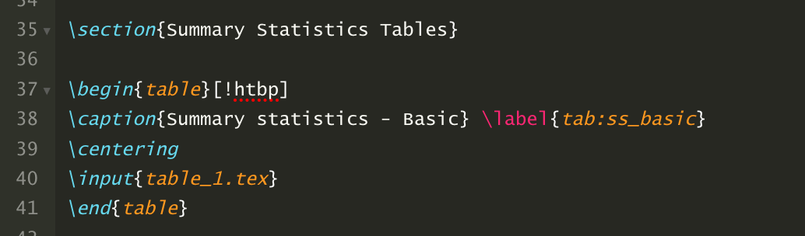
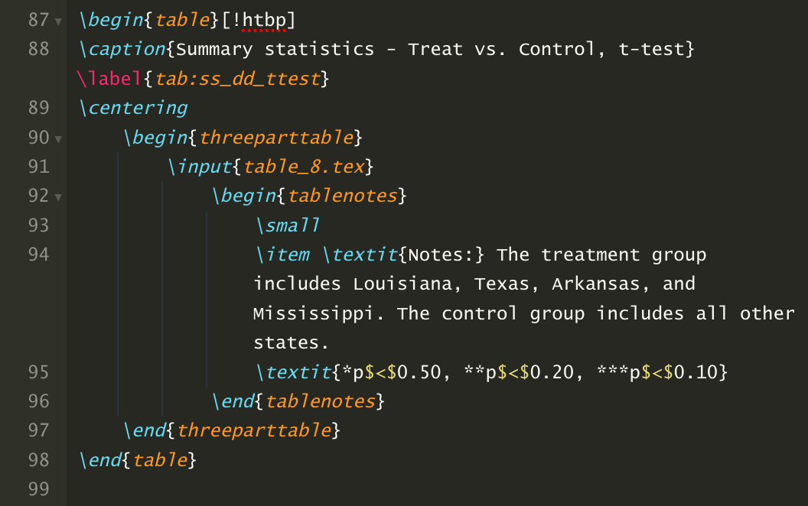

ssc install estout, replaceMaking Tables with STATA
Exporting STATA Tables to LaTeX and Word
This guide will cover the basics of exporting summary statistics and regression coefficients from STATA to formatted tables in LaTeX and Word. Much of the information in this guide was drawn from Asjad Naqvi’s “The Stata-to-LaTex guide” published on Medium. You can download a STATA .do file that contains all of the code I used to generate the table examples here.
The Setup
STATA
To create LaTeX tables in STATA, you’ll need to install the estout package.
If you already have the estout package installed, make sure that you’re using the latest version.
LaTeX
You’ll also need some way to compile LaTeX files. Overleaf is probably the most commonly used compiler, though you could also download a compiler, like TeXLive to your computer. I recommend Overleaf because it stores all of your projects online and makes for easy collaboration.
You’ll need to add the following packages to your LaTeX preamble in order to compile the tables in this guide. These packages need to be added in addition to any other packages you need to compile your document.

Word
There is no setup to do in Word. We’ll export STATA tables to .rtf files and you can open these files directly in Word.
Summary Statistics Tables
Run the following STATA code that will load an example data set, tabulate some basic summary statistics, and stores the results in STATA’s e() matrices.
sysuse census, clear
foreach i of varlist pop-popurban death-divorce {
replace `i' = `i' / 1000
}
est clear
estpost tabstat pop pop65p medage death marriage divorce, c(stat) stat(sum mean sd min max n)Now we can use the esttab command, which is part of the estout package, to generate a summary statistics table. We’ll start with a basic table and add additional elements as we go.
LaTeX
esttab using "~/table_1.tex", replace cells("sum mean sd min max count") booktabsWord
esttab using "~/tables.rtf", replace ///
cells("sum mean sd min max count") title("Table 1: Summary statistics - Basic")You should replace the “~” with your desired path for file storage. You’ll probably want to set this path at the beginning of your .do file using a global.
Once you’ve generated the table_1.tex file, you can upload it into your Overleaf document and add the following code to display the table:

This code tells LaTeX that we’re placing a table in the document and that the table should use the table_1.tex file for its input. The !htbp command helps with table positioning. The exclamation point overrides some LaTeX defaults and may not be appropriate to use in all cases. If you’re struggling to get the table to display in a proper position in the document, try removing the exclamation point. The \centering command tells LaTeX to put the table in the center of the page and the \caption command allows us to add a title to the table. Note that you could also add a title using the title option in STATA’s esttab command. We’ll do this for our Word tables, but when using LaTeX, it’s better to add titles in the LaTeX document itself. Finally, the label command in LaTeX allows us to add a label to the table that we can reference throughout our LaTeX document. It’s always better to refer to something like “Table \ref{tab:ss_basic}” rather than “Table 1” in your LaTeX document. That way, if the table order changes, the table numbers in your document will update automatically.
By default, LaTeX will include the subsection number in the table number, so you’ll get something like “Table 1.1”. To drop the subsection number, you can add the following command to your LaTeX preamble: \renewcommand{\thetable}{\arabic{table}}.
You’ll see that this table contains the sum, mean, standard deviation, minimum, maximum, and observation count for six variables in the census data set. This looks pretty good, but there are some elements that aren’t quite right. For example, the table has only one column number for six columns and it contains the number of observations as both a column and row at the bottom. We can clean this up by adding the following options to the esttab command in STATA:
LaTeX
esttab using "~/table_2.tex", replace cells("sum mean sd min max count") ///
booktabs nonumber nomtitle nonote noobs compress labelWord
esttab using "~/tables.rtf", append ///
cells("sum mean sd min max count") title("Table 2: Summary statistics - Basic, Clean") ///
nonumber nomtitle nonote noobs compress labelAdd this new table to your LaTeX document like this:
The vspace{0.5in} command adds a half inch of blank space between the two tables. It’s not necessary, but makes things look better in this case.
Note that for LaTeX, we’re creating separate .tex files for Table 1 and Table 2, but for Word, we’re creating one .rtf document called “tables” and appending Table 2 to Table 1. In LaTeX, you’ll want separate files for each table, but that’s not typically something that you’ll want in Word.
Our table is looking better now. We got rid of the column numbering and the extra observation count. But there are still improvements that we could make. For example, suppose that we don’t need all these decimal places in each column. We can adjust that by formatting the column output in the esttab command as follows. Let’s also clean up some of the column names while we’re at it:
LaTeX
esttab using "~/table_3.tex", replace ///
cells("sum(fmt(%8.0fc)) mean(fmt(%8.2fc)) sd(fmt(%8.2fc)) min max count") ///
booktabs nonumber nomtitle nonote noobs compress label ///
collabels("Sum" "Mean" "SD" "Min" "Max" "Obs")Word
esttab using "~/tables.rtf", append ///
cells("sum(fmt(%8.0fc)) mean(fmt(%8.2fc)) sd(fmt(%8.2fc)) min max count") ///
title("Table 3: Summary statistics - Basic, Formatted") ///
nonumber nomtitle nonote noobs compress label ///
collabels("Sum" "Mean" "SD" "Min" "Max" "Obs")This looks good, but oftentimes we want summary statistics tables that compare characteristics for a treatment group and a control group. Run the following STATA code that designates certain states in the census data as “treated” states and the others as “control states”.
gen treat=1 if inlist(state, "Louisiana", "Texas", "Arkansas", "Mississippi")
replace treat=0 if treat==.Now run the following estpost and modified esttab commands that will generate a treatment vs. control summary statistics table. Note that, for this table, we’ll focus on the mean and the standard deviation of the variables of interest and present the information in the more standard format of estimate over the standard deviation.
est clear
estpost tabstat pop pop65p medage death marriage divorce, by(treat) c(stat) stat(mean sd) nototalLaTeX
esttab using "~/table_4.tex", replace ///
cells("mean(fmt(%8.2fc))" "sd(par)") ///
booktabs nonumber nomtitle nonote noobs compress label unstack gap ///
collabels(none) eqlabels("Treatment" "Control")Word
esttab using "~/tables.rtf", append ///
cells("mean(fmt(%8.2fc))" "sd(par)") ///
title("Table 4: Summary statistics - Treat vs. Control") ///
nonumber nomtitle nonote noobs compress label unstack gap ///
collabels(none) eqlabels("Treatment" "Control")One thing to note here is that we’re using eqlables rather than collabels to add column labels. This is because when we use the by() option in the estpost command, the STATA output is stacked in one long column. We use the unstack option to split the summary statistics by treatment and control groups, and when we do this, STATA treats each column as an “equation”.
Another thing to be aware of is that we’re using the sd(par) option to put the standard errors in parentheses under the mean values. When we do this, any formatting that we use for the mean (e.g., %8.2fc) is passed on to the standard deviation unless we explicitly select a different formatting option for the standard deviation.
Now suppose we want to group our summary statistic variables into categories. In this case, we’ll use two categories: Demographics and Status. To do this, we can modify the esttab code as follows:
LaTeX
esttab using "~/table_5.tex", replace ///
refcat(pop "\emph{Demographic}" death "\vspace{0.1em} \\ \emph{Status}", nolabel) ///
cells("mean(fmt(%8.2fc))" "sd(par)") ///
booktabs nonumber nomtitle nonote noobs compress label unstack gap ///
collabels(none) eqlabels("Treatment" "Control")Word
esttab using "~/tables.rtf", append ///
refcat(pop "{\i Demographic}" death "\line {\i Status}", nolabel) ///
cells("mean(fmt(%8.2fc))" "sd(par)") ///
title("Table 5: Summary statistics - Treat vs. Control, Grouped") ///
nonumber nomtitle nonote noobs compress label unstack gap ///
collabels(none) eqlabels("Treatment" "Control")The key to adding the group names is the refcat command. The syntax requires us to tell LaTeX or Word the variable name that we want to be directly below the group name (e.g., pop for Demographic). The \vspace command in LaTeX and the \line command in Word allows us to control the space between the variable groupings in the table.
This looks pretty good, but the spaces between the variables in the table are a little large. We can fix that by replacing the gaps option with the nogaps option and re-running:
LaTeX
esttab using "~/table_6.tex", replace ///
refcat(pop "\emph{Demographic}" death "\vspace{0.1em} \\ \emph{Status}", nolabel) ///
cells("mean(fmt(%8.2fc))" "sd(par)") ///
booktabs nonumber nomtitle nonote noobs compress label unstack nogaps ///
collabels(none) eqlabels("Treatment" "Control")Word
esttab using "~/tables.rtf", append ///
refcat(pop "{\i Demographic}" death "\line {\i Status}", nolabel) ///
cells("mean(fmt(%8.2fc))" "sd(par)") ///
title("Table 6: Summary statistics - Treat vs. Control, Spaced") ///
nonumber nomtitle nonote noobs compress label unstack nogaps ///
collabels(none) eqlabels("Treatment" "Control")We’re getting pretty close to where we want to be with this table, but it would probably be helpful to readers if we added the number of observations in the treatment and control groups to the table. To do this, we need to save the number of observations for both the treatment and control groups in locals and include those local values in the stats option for esttab. Run the following STATA code (after the estpost command) and then see below for the esttab modifications:
count if treat == 1
estadd local treat_N = r(N)
count if treat == 0
estadd local control_N = r(N)LaTeX
esttab using "~/table_7.tex", replace ///
refcat(pop "\emph{Demographic}" death "\vspace{0.01in} \\ \emph{Status}", nolabel) ///
cells("mean(fmt(%8.2fc))" "sd(par)") ///
booktabs nonumber nomtitle nonote noobs compress label unstack nogaps ///
collabels(none) eqlabels("Treatment" "Control") ///
stats(treat_N control_N, layout("@ @") labels("Observations"))Word
esttab using "~/tables.rtf", append ///
refcat(pop "{\i Demographic}" death "\line {\i Status}", nolabel) ///
cells("mean(fmt(%8.2fc))" "sd(par)") ///
title("Table 7: Summary statistics - Treat vs. Control, Obs") ///
nonumber nomtitle nonote noobs compress label unstack nogaps ///
collabels(none) eqlabels("Treatment" "Control") ///
stats(treat_N control_N, layout("@ @") labels("Observations"))This code counts the number of observations in the treatment group and stores that number in a local called “treat_N”. It does the same thing for the control group and stores the result in a local called “control_N”. We then use the stats option to include the observation values, the layout option to tell LaTeX or Word that we want these observation values to appear in the same row in the table (without this option, LaTeX or Word will put each value in a different row), and the labels option tells LaTeX or Word that we want to label this row “Observations”.
Sometimes it’s helpful to know whether differences in summary statistics across treatment and control groups are statistically different. We can check this by running a series of t-tests and adding the results to the table. This is going to take some extensive modifications to our current code because we’ll need to use the ttest command instead of the tabstat command. This means we’ll have to adjust some of our esttab code as a result. Run the following STATA code and then see below for the esttab modifications:
global vars pop pop65p medage death marriage divorce
est clear
estpost ttest $vars, by(treat)
count if treat == 1
estadd local treat_N = r(N)
count if treat == 0
estadd local control_N = r(N)LaTeX
esttab using "~/table_8.tex", replace ///
refcat(pop "\emph{Demographic}" death "\vspace{0.01in} \\ \emph{Status}", nolabel) ///
cells("mu_1 mu_2 p(star)") ///
star(* 0.50 ** 0.20 *** 0.10) ///
booktabs nonumber nomtitle nonote noobs compress label nogaps ///
collabels("Treatment" "Control" "\shortstack{p-Value of\\Difference}") ///
stats(treat_N control_N, layout("@ @") labels("Observations"))Word
esttab using "~/tables.rtf", append ///
refcat(pop "{\i Demographic}" death "\line {\i Status}", nolabel) ///
cells("mu_1 mu_2 p(star)") ///
star(* 0.50 ** 0.20 *** 0.10) ///
title("Table 8: Summary statistics - Treat vs. Control, t-test") ///
nonumber nomtitle nonote noobs compress label nogaps ///
collabels("Treatment" "Control" "p-Value of Difference") ///
stats(treat_N control_N, layout("@ @") labels("Observations"))First, we’re defining a global called vars that includes each of the variables we’ll include in our summary statistics table. We’re then running a t-test on each variable across the treatment and control groups. Next, we add the observation count for the treatment and control groups just like we did before. We then need to modify our esttab code so that the arguments in our cell command reflect the names that ttest uses (which are different than the names tabstat uses). We tell STATA to output two columns of means (one for the treatment group and one for the control group) and the p-value of the difference. The (star) option tells STATA that we want stars to represent statistical significance attached to the p-values. We then need to define our significance levels or else STATA will use the default *p<0.05, **p<0.01, ***p<0.001. Notice that I’m defining some pretty strange significance levels in this example. The reason is that there aren’t any differences in summary statistics between the treatment and control group where p<0.10, so I’m bumping these up so that some stars will appear in the table. The last thing to notice is that we’re using collabels now instead of eqlabels. That’s again due to the change from tabstat to ttest. As a result, I dropped the unstack option, which is no longer needed. I also wanted to label the third column “p-Value of Difference”, but that was too long for the cell size in LaTeX. So I used the \shortstack command along with the double backslashes to add a line break in the column label.
Finally, let’s add some footnotes to explain to readers that we’re using some strange values to denote statistical significance.
LaTeX
Like table titles, table notes are best added in LaTeX and not through STATA’s esttab command. There are a few ways to do this, but I like to use the threeparttable package in LaTeX. Add the following to your LaTeX preamble:
\usepackage[flushleft]{threeparttable}
And then include the following LaTeX code that adds a footnote to the summary statistics table:

Word
For Word tables, we can include the footnotes in the esttab command by using the addnotes option:
esttab using "~/tables.rtf", append ///
refcat(pop "{\i Demographic}" death "\line {\i Status}", nolabel) ///
cells("mu_1 mu_2 p(star)") ///
star(* 0.50 ** 0.20 *** 0.10) ///
title("Table 8: Summary statistics - Treat vs. Control, t-test") ///
nonumber nomtitle nonote noobs compress label nogaps ///
collabels("Treatment" "Control" "p-Value of Difference") ///
stats(treat_N control_N, layout("@ @") labels("Observations")) ///
addnotes("{\i Notes:} The treatment group includes Louisiana, Texas, Arkansas, and Mississippi. The control group includes all other states." "{\i *p<0.50, **p<0.20, ***p<0.10}")That should give you most of the flexibility you’ll need to export summary statistics tables directly from STATA to either LaTeX or Word. Now let’s take a look at exporting regression tables.
Regression Tables
Run the following STATA code that will load a data set and make some manipulations to the data:
webuse nlswork, clear
xtset idcode year
gen age2 = age^2
gen ttl_exp2 = ttl_exp^2
gen tenure2 = tenure^2
lab var age "Age"
lab var age2 "Age sq."
lab var ttl_exp "Work experience"
lab var ttl_exp2 "Work experience sq."
lab var tenure "Job tenure"
lab var tenure2 "Job tenure eq."
lab var not_smsa "SMSA (=1)"
lab var south "South (=1)"
lab var union "Union (=1)"No we’ll run a few basic regressions in STATA where the first specification regresses log wages on union status; the second specification adds controls for age, work experience, and job tenure; and the third specification adds controls for living in a rural area and living in the South census region:
est clear
eststo: xtreg ln_w union
eststo: xtreg ln_w union age* ttl_exp* tenure*
eststo: xtreg ln_w union age* ttl_exp* tenure* not_smsa southWe’re using STATA’s eststo command to store the regression results from each specification. We can use the following code to export a basic table to LaTeX and Word and then we’ll add more elements to the table as we go:
LaTeX
esttab using "~/table_9.tex", replace ///
b(3) se(3) star(* 0.10 ** 0.05 *** 0.01) ///
booktabs nomtitle labelThis code should look familiar with one slight change from the previous table code we’ve been running. Here, instead of using the %fmt command to format the table estimates, I’ve used the simpler b(#) and se(#). This tells STATA to export regression coefficients and standard errors at a number of decimal points equal to “#” (i.e., three decimal places in this case).
You can use the following LaTeX code to import the table into your document. Notice that I’ve added a title and table notes in LaTeX using the caption command and the threeparttable package.
Word
esttab using "~/tables.rtf", append ///
b(3) se(3) star(* 0.10 ** 0.05 *** 0.01) ///
title("Table 9: Regression Table - Basic") ///
nomtitle nonote compress label ///
addnotes("{\i Notes:} This is an example of a regression table where we estimate three different specifications adding controls as we go." "{\i *p<0.10, **p<0.05, ***p<0.01}")Unlike in LaTeX, when using Word I add the title and the table notes using the esttab command. The only other difference between the Word and LaTeX code is that I’ve dropped the booktabs option from the Word code since that’s a LaTeX-specific option.
The data we’re using for this example come from the NLSY, which is an individual-level panel data set. That means we can add both individual and time (year) fixed effects to our regression. Let’s do that so we can see how to add rows to the bottom of the regression table that indicate our use of fixed effects.
First, we need to re-run the regressions in STATA and create local values that store the fixed effects information.
est clear
eststo: xtreg ln_w union
estadd local TE "No"
estadd local FE "No"
eststo: xtreg ln_w union age* ttl_exp* tenure*
estadd local TE "No"
estadd local FE "No"
eststo: xtreg ln_w union age* ttl_exp* tenure* not_smsa south
estadd local TE "No"
estadd local FE "No"
eststo: xtreg ln_w union age* ttl_exp* tenure* not_smsa south i.year
estadd local TE "Yes"
estadd local FE "No"
eststo: xtreg ln_w union age* ttl_exp* tenure* not_smsa south i.year, fe
estadd local TE "Yes"
estadd local FE "Yes"Now we can export the tables and add a row that provides information on which fixed effects we used in each specification.
LaTeX
esttab using "~/table_10.tex", replace ///
b(3) se(3) keep(union age* ttl_exp* tenure* not_smsa south) ///
star(* 0.10 ** 0.05 *** 0.01) ///
booktabs nomtitle nonote compress label ///
scalars("TE Year fixed effects" "IE Individual fixed effects") sfmt(2 0)Word
esttab using "~/tables.rtf", append ///
b(3) se(3) keep(union age* ttl_exp* tenure* not_smsa south) ///
star(* 0.10 ** 0.05 *** 0.01) ///
title("Table 10: Regression Table - FE") ///
nomtitle nonote compress label ///
scalars("TE Year fixed effects" "FE Individual fixed effects") ///
addnotes("{\i Notes:} This is an example of a regression table where we estimate three different specifications adding controls as we go." "{\i *p<0.10, **p<0.05, ***p<0.01}")The esttab code is similar for exporting to LaTeX or Windows - we just need to drop the booktabs option and add the table title and notes when exporting to Word.
The table looks pretty good, but it would be nice if we had a row that included the mean of the dependent variable. I’d also like to move the row that contains the number of observations to the bottom of the table. Here’s how we can make those changes. First, run the following code in STATA:
est clear
eststo: xtreg ln_w union
qui sum `e(depvar)' if e(sample)
estadd scalar Mean= r(mean)
estadd local TE "No"
estadd local FE "No"
eststo: xtreg ln_w union age* ttl_exp* tenure*
qui sum `e(depvar)' if e(sample)
estadd scalar Mean= r(mean)
estadd local TE "No"
estadd local FE "No"
eststo: xtreg ln_w union age* ttl_exp* tenure* not_smsa south
qui sum `e(depvar)' if e(sample)
estadd scalar Mean= r(mean)
estadd local TE "No"
estadd local FE "No"
eststo: xtreg ln_w union age* ttl_exp* tenure* not_smsa south i.year
qui sum `e(depvar)' if e(sample)
estadd scalar Mean= r(mean)
estadd local TE "Yes"
estadd local FE "No"
eststo: xtreg ln_w union age* ttl_exp* tenure* not_smsa south i.year, fe
qui sum `e(depvar)' if e(sample)
estadd scalar Mean= r(mean)
estadd local TE "Yes"
estadd local FE "Yes"Here we’ve added a command to display the mean value of the dependent variable after each regression and store that value as a scalar. Next, run the following code in either LaTeX or Word to output the table:
LaTeX
esttab using "~/table_11.tex", replace ///
b(3) se(3) keep(union age* ttl_exp* tenure* not_smsa south) ///
star(* 0.10 ** 0.05 *** 0.01) ///
booktabs nomtitle nonote noobs compress label ///
scalars("TE Year fixed effects" "FE Individual fixed effects" "Mean \vspace{0.01cm} \\ Dep. Var. Mean" "N Observations") sfmt(0 0 2 %8.0fc)Word
esttab using "~/tables.rtf", append ///
b(3) se(3) keep(union age* ttl_exp* tenure* not_smsa south) ///
star(* 0.10 ** 0.05 *** 0.01) ///
title("Table 11: Regression Table - FE") ///
nomtitle nonote noobs compress label ///
scalars("TE Year fixed effects" "FE Individual fixed effects \line" "Mean Dep. Var. Mean" "N Observations") sfmt(0 0 2 %8.0fc) ///
addnotes("{\i Notes:} This is an example of a regression table where we estimate three different specifications adding controls as we go." "{\i *p<0.10, **p<0.05, ***p<0.01}")Note a couple of important changes here. First, we’ve added the noobs command so that the number of observations isn’t automatically populated in the first row beneath the regression results. We still want the number of observations, but we want it in the bottom row of the table. To get that, we’re including N as a scalar option and placing it at the end of the scalars() list so that it shows up in the bottom row. We’re also adding the sfmt command that controls the formatting of the scalars. Without this command, they will display in the same format as the regression coefficient estimates.
Now let’s look at an example where we include regression output with different dependent variables in the same table. Suppose we have three dependent variables: log wages, usual weekly hours worked, and average weeks unemployed in the previous year, and we want to estimate a specification with and without time and person fixed effects for each outcome. Run the following STATA code:
est clear
foreach i of varlist ln_wage hours wks_ue {
eststo: xtreg `i' union age* ttl_exp* tenure* not_smsa south
qui sum `e(depvar)' if e(sample)
estadd scalar Mean= r(mean)
estadd local TE "No"
estadd local FE "No"
eststo: xtreg `i' union age* ttl_exp* tenure* not_smsa south i.year, fe
qui sum `e(depvar)' if e(sample)
estadd scalar Mean= r(mean)
estadd local TE "Yes"
estadd local FE "Yes"
}This is pretty much the same code we ran for the last example table, only here I’ve created a foreach loop that loops through the three dependent variables. We can output the tables in LaTeX and Word as follows:
LaTeX
esttab using "~/table_12.tex", replace ///
b(3) se(3) keep(union age* ttl_exp* tenure* not_smsa south) ///
star(* 0.10 ** 0.05 *** 0.01) ///
booktabs nomtitle nonote noobs compress label ///
mgroups("Ln(Wages)" "Hours worked" "Weeks unemployed", pattern(1 0 1 0 1 0) ///
prefix(\multicolumn{@span}{c}{) suffix(}) span erepeat(\cmidrule(lr){@span})) ///
scalars("TE Year fixed effects" "FE Individual fixed effects" "Mean \vspace{0.01cm} \\ Dep. Var. Mean" "N Observations") sfmt(0 0 2 %8.0fc)Word
esttab using "~/tables.rtf", append ///
b(3) se(3) keep(union age* ttl_exp* tenure* not_smsa south) ///
star(* 0.10 ** 0.05 *** 0.01) ///
title("Table 12: Regression Table - Grouped") ///
nomtitle nonote noobs compress label ///
mgroups("Ln(Wages)" "Hours worked" "Weeks unemployed", pattern(1 0 1 0 1 0)) ///
scalars("TE Year fixed effects" "FE Individual fixed effects \line" "Mean Dep. Var. Mean" "N Observations") sfmt(0 0 2 %8.0fc) ///
addnotes("{\i Notes:} This is an example of a regression table where we estimate three different specifications adding controls as we go." "{\i *p<0.10, **p<0.05, ***p<0.01}")Note that we’ve added the mgroups option to the output code. This option groups together regressions with the same dependent variable into adjacent columns and adds column titles. We’ve also added some LaTeX formatting language that centers the column titles and adds a solid line under each title. The LaTeX output code works great and gives us exactly what we want. The Word code isn’t quite as good and so the table will require some manipulation when opened in Word (e.g., centering column titles).
This should cover most of the tables you’ll need to create. Asjad Naqvi’s “The Stata-to-LaTex guide” has a few other examples for rarely used cases. You can find some additional resources for exporting tables from STATA into LaTeX on Luke Stein’s GitHub repo.